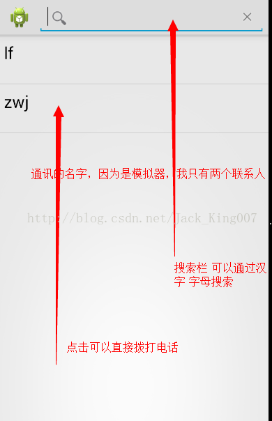

Loader 中文名是装载器，为毛叫这个名，老师讲那么久，我都不知道有啥用，看了API 才懂了那么一丢丢，真难，我在后面再说下吧。
装载器—字面意思 装 东西 ，载 还是装东西，器 想着肯定封装了东西的。
好啦不瞎想了 猜猜有助于记忆而已，看看谷歌官方怎么说的................
装载器从android3.0开始引进。它使得在activity或fragment中异步加载数据变得简单。装载器具有如下特性：
-
它们对每个Activity和Fragment都有效。
-
他们提供了异步加载数据的能力。
-
它们监视数据源的一举一动并在内容改变时传送新的结果。
-
当由于配置改变而被重新创建后，它们自动重连到上一个加载器的游标，所以不必重新查询数据。 PS：估计这是最适合我们的一点。
简单点说：就是安卓官方不允许耗时操作在UI线程（主线程）操作，所以他就出现了，看到游标（cursor） 我就想到内容提供者，同时就想到异步.....我估计就是异步加载本地数据。
主要的类
1.LoaderManager：一看就知道是管理装载器，一般和CursorLoader一起用 初始化装载器，一个activity只能有一个装载器 他可以无数个。
2.CursorLoader：其实我早就觉得他跟异步有勾结 淫荡两人组，果然不错，
|
AsyncTaskLoader的子类，它查询ContentResolver然后返回一个Cursor。这个类为查询cursor以标准的方式实现了装载器的协议，它的游标查询是通过AsyncTaskLoader在后台线程中执行，从而不会阻塞界面。使用这个装载器是从一个ContentProvider异步加载数据的最好方式。相比之下，通过fragment或activity的API来执行一个被管理的查询就不行了。 |
3.AsyncTaskLoader
提供一个AsyncTask来执行异步加载工作的抽象类。
4.Loader（装载器）
一个执行异步数据加载的抽象类。它是加载器的基类。你可以使用典型的CursorLoader，但是你也可以实现你自己的子类。一旦装载器被激活，它们将监视它们的数据源并且在数据改变时发送新的结果。
5.LoaderManager.LoaderCallbacks
一个用于客户端与LoaderManager交互的回调接口。例如，你使用回调方法onCreateLoader()来创建一个新的装载器。
一个使用装载器的应用会典型的包含如下组件：
-
一个Activity或Fragment．
-
一个LoaderManager的实例．
-
一个加载被ContentProvider所支持的数据的CursorLoader．或者，你可以从Loader或AsyncTaskLoader实现你自己的装载器来从其它源加载数据．
-
一个LoaderManager.LoaderCallbacks的实现．这是你创建新的装载器以及管理你的已有装载器的引用的地方．
-
一个显示装载器的数据的途径，例如使用一个SimpleCursorAdapter．
-
一个数据源，比如当是用CursorLoader时，它将是一个ContentProvider．
开始 介绍 怎么用吧------------------------我是淫荡的分割线-------------------------------------------------------------------------
启动一个装载器
LoaderManager管理一个Activiry或Fragment中的一个或多个装载器．但每个activity或fragment只拥有一个LoaderManager．
你通常要在activity的onCreate()方法中或fragment的onActivityCreated()方法
// 准备装载器．可以重连一个已经存在的也可以启动一个新的．
getLoaderManager().initLoader(0,null, this); 第一个参数是
他的特征码 有了他 你才能找到他
第二个参数是：可选参数 我也不知道
第三个 参数是：在哪个activity调用的，当前可用this 代替
我就不讲基础 如果想详细了解 可参考 http://blog.csdn.net/yangdeli888/article/details/7911862
SimpleCurosrAdapter 的四个参数 已经怎么使用
：
SimpleCurosrAdapter 是一个将 Cursor 中的 columns 与在 XML 文件中定义的 TextViews 或 ImageViews 进行匹配的简易 adapter。你可以指定选择 Cursor 中的哪些 columns、用哪些 views 来显示这些 columns 、以及指定定义这些 views 的 xml 文件。
也就是说，SimpleCursorAdapter 允许绑定一个 Cursor 的 columns 到 ListView 上，并使用自定义的 layout 显示 List中的每个项目。
可以使用 SimpleCursorAdapter 作为中间桥梁，将从 sqlite 数据库中查询出来的数据直接显示到 ListView 中。
原型：
public SimpleCursorAdapter(Context context, int layout, Cursor c, String[] from, int[] to) {
super(context, layout, c);
mTo = to;
mOriginalFrom = from;
findColumns(from);
}
参数：
Context context, 这个与 SimpleListItemFactory 相关的 ListView 所处运行上下文（context）。也就是这个 ListView 所在的 Activity。
int layout, 显示 list item 的 布局文件。这个 layout 文件中至少要包含在 "to" 参数中命名的 views。
Cursor c, 数据库的光标( Cursor )。如果 cursor 无效，则该参数可以为 null
String[] from, 指定 column 中的哪些列的数据将绑定（显示）到 UI 中。如果 cursor 无效， 则该参数可为 null。
int[] to, 指定用于显示 "from" 参数指定的数据列表的 views。 这些 views 必须都是 TextViews。 "from" 参数的前 N 个值（valus）和 "to" 参数的前 N 个 views 是一一对应的关系。如果 cursor 无效，则该参数可为 null。
基本上基础知识大家好复习好了，我也可以开始 上代码解析了。

package com.example.android16_demo6_apicursorloadersearchview;
import android.app.Activity;
import android.app.LoaderManager.LoaderCallbacks;
import android.content.ContentResolver;
import android.content.CursorLoader;
import android.content.Intent;
import android.content.Loader;
import android.database.Cursor;
import android.net.Uri;
import android.os.Bundle;
import android.provider.ContactsContract.CommonDataKinds.Phone;
import android.provider.ContactsContract.Contacts;
import android.text.TextUtils;
import android.view.Menu;
import android.view.MenuItem;
import android.view.View;
import android.widget.AdapterView;
import android.widget.AdapterView.OnItemClickListener;
import android.widget.ListView;
import android.widget.SearchView;
import android.widget.SearchView.OnQueryTextListener;
import android.widget.SimpleCursorAdapter;
public class MainActivity extends Activity implements LoaderCallbacks<Cursor>,
OnQueryTextListener {
private ListView lv;
private SimpleCursorAdapter adapter;
private String curFilter;// 用户当前输入的搜索内容，只有在用户输入的时候才会有，应用程序刚打开的时候没有
private Uri phoneUri;
private Cursor cursor;// 记录当前ListView中展示的数据
@Override
protected void onCreate(Bundle savedInstanceState) {
super.onCreate(savedInstanceState);
setContentView(R.layout.activity_main);
lv = (ListView) findViewById(R.id.lv);
phoneUri = Phone.CONTENT_URI;// 电话号码Ur
//第一个参数 当使用的activity名字
//第二个参数 要绑定数据的布局
//第三个参数 游标没有可以设置为空
//第四个参数 指定 column 中的哪些列的数据将绑定（显示）到 UI 中
//第五个参数就是要绑定到UI界面的那个组件
adapter = new SimpleCursorAdapter(MainActivity.this,
android.R.layout.simple_list_item_2, null, new String[] {
Contacts.DISPLAY_NAME, Contacts.CONTACT_STATUS },
new int[] { android.R.id.text1, android.R.id.text2 });
lv.setAdapter(adapter);
// 点击item，打电话：权限
lv.setOnItemClickListener(new OnItemClickListener() {
@Override
public void onItemClick(AdapterView<?> parent, View view,
int position, long id) {
// 点击到某个item的时候，从cursor取出该item的数据
cursor.moveToPosition(position);
//拿出来id，因为要通过id查电话号码
String idd = cursor.getString(cursor
.getColumnIndex(Contacts._ID));
ContentResolver resolver = getContentResolver();
//电话号码相关信息都在Phone中
Cursor cursor2 = resolver.query(phoneUri, new String[] { Phone.DATA1 },
Phone.CONTACT_ID + "=?", new String[] { idd }, null);
if(cursor2.moveToNext()){
//取出电话号码
String num = cursor2.getString(cursor2.getColumnIndex(Phone.DATA1));
System.out.println("==num==="+num);
//打电话：权限
Intent intent=new Intent();
intent.setAction(Intent.ACTION_CALL);
intent.setData(Uri.parse("tel://"+num));
startActivity(intent);
}
}
});
getLoaderManager().initLoader(1, null, this);
}
@Override
public boolean onCreateOptionsMenu(Menu menu) {
MenuItem item = menu.add("search");
item.setIcon(android.R.drawable.ic_menu_search);
item.setShowAsAction(MenuItem.SHOW_AS_ACTION_IF_ROOM);
SearchView sv = new SearchView(MainActivity.this);
sv.setOnQueryTextListener(this);
item.setActionView(sv);
return true;
}
@Override
public Loader<Cursor> onCreateLoader(int id, Bundle args) {
Uri uri;
if (curFilter != null) {
uri = Uri.withAppendedPath(Contacts.CONTENT_FILTER_URI,
Uri.encode(curFilter));
} else {
uri = Contacts.CONTENT_URI;
}
// 记录的是要查询的列
String[] projection = new String[] { Contacts._ID,
Contacts.DISPLAY_NAME, Contacts.CONTACT_STATUS,
Contacts.CONTACT_PRESENCE, Contacts.PHOTO_ID,
Contacts.LOOKUP_KEY, };
// 查询条件：
String selection = "((" + Contacts.DISPLAY_NAME + " NOTNULL) AND ("
+ Contacts.HAS_PHONE_NUMBER + "=1) AND ("
+ Contacts.DISPLAY_NAME + " != '' ))";
CursorLoader loader = new CursorLoader(MainActivity.this, uri,
projection, selection, null, Contacts.DISPLAY_NAME
+ " COLLATE LOCALIZED ASC");
return loader;
}
@Override
public void onLoadFinished(Loader<Cursor> loader, Cursor data) {
adapter.swapCursor(data);
cursor = data;
}
@Override
public void onLoaderReset(Loader<Cursor> loader) {
adapter.swapCursor(null);
}
@Override
public boolean onQueryTextSubmit(String query) {
return true;
}
@Override
public boolean onQueryTextChange(String newText) {
curFilter = TextUtils.isEmpty(newText) ? null : newText;
// 输入内容改变过程中，动态刷新ListVIew
getLoaderManager().restartLoader(1, null, this);
return true;
}
}